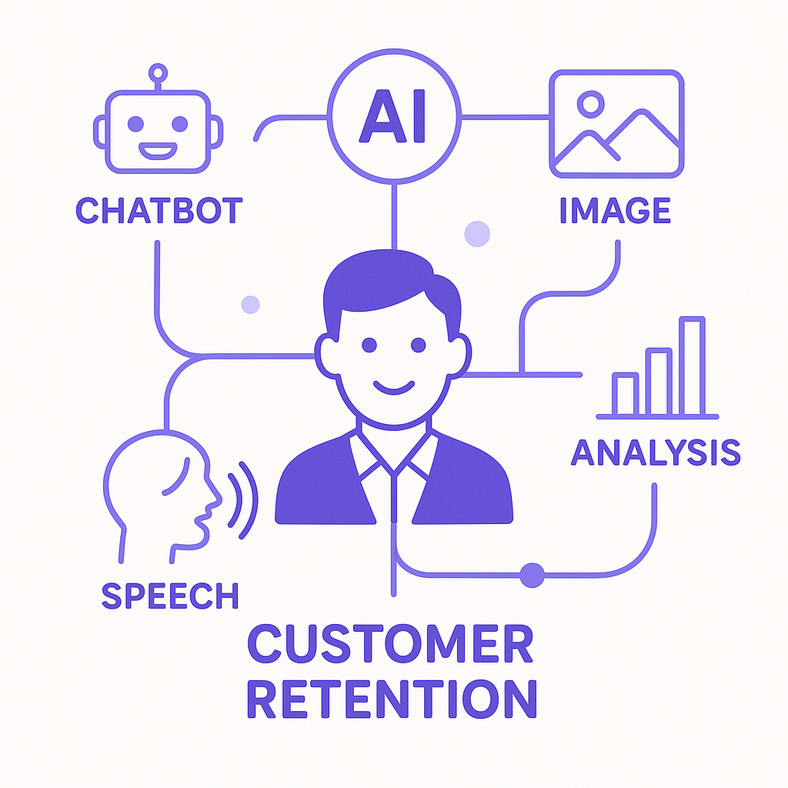

Publishing Recommendation
reviseSeveral posts contain overly promotional language and lack the level of specificity and practical insight expected from Purands AI's brand voice.
Today's drafts generally align with current trends but need refinement to better fit Purands AI's voice. The posts should offer more practical insights and less promotional language. Focus on concrete examples and real-world applications rather than hypothetical scenarios to enhance credibility and engagement with the audience.
LinkedIn Posts (10)
1. Meta's Push into Personal AI Agents ★ Purands solution · high priority
CTA: How do you see personal AI agents changing your customer engagement strategy?
{kind=link}
Image prompt · isometric-flat
Caption: Personal AI agents enhancing customer engagement.
Alternative hooks
- Meta's personal AI agents could redefine how you engage with customers.
- What if every customer had a personal AI agent?
- AI agents aren't just a buzzword; they're reshaping customer retention.
Research behind this post (sources, summaries & confidence)
Meta's Push into Personal AI Agents conf 0.80 · AI industry
Meta's aggressive investment in personal AI agents signals a huge shift in how companies might leverage AI for customer engagement and retention. Personal AI agents could redefine lifecycle messaging and customer interaction frameworks.
Sources & what I took from each
- Meta's investment in AI infrastructure: Meta has announced substantial investments in AI to develop personal AI agents, as reported by credible tech news outlets. ↗ read source
- Potential impact on customer engagement strategies: Meta's personal AI agents are expected to be integrated into current customer engagement frameworks, possibly altering how companies interact with customers. ↗ read source
Statistics
- Meta's AI investment is projected to reach billions annually by 2027.
Examples
- Meta's collaboration with consumer brands to integrate AI agents into customer service.
Recent news
- Mark Zuckerberg announced at a recent earnings call that Meta plans to deploy personal AI agents widely within five years.
Original trend links
- https://techcrunch.com/2026/07/29/mark-zuckerberg-predicts-that-billions-of-people-will-have-personal-ai-agents-in-five-years/
- https://www.theverge.com/tech/972294/meta-q2-2026-earnings-mark-zuckerberg-personal-ai-agents
Risks / caveats
- Privacy concerns regarding the deployment of personal AI agents.
- Potential resistance from users uncomfortable with AI integration.
2. Salesforce Launches New Slackbot AI Agent ★ Purands solution · high priority
CTA: How are you integrating AI into your customer engagement strategy?
Alternative hooks
- Salesforce's Slackbot AI agent promises to boost productivity by 30%; imagine what AI can do for customer retention.
- Slack's new AI agent streamlines communication; Purands AI does the same for customer engagement.
- 30% productivity boost with Slackbot AI: a glimpse into AI's potential for customer retention.
Research behind this post (sources, summaries & confidence)
Salesforce Launches New Slackbot AI Agent conf 0.70 · SaaS
Salesforce's new Slackbot AI agent could transform enterprise communication and operations, enhancing internal workflows and customer service. This aligns with retention goals by improving team efficiency and client interactions.
Sources & what I took from each
- New AI functionalities in Slack: Salesforce introduced a new Slackbot AI agent, which adds capabilities that enhance communication and collaboration within teams. ↗ read source
Statistics
- Slack's integration with AI is expected to increase team productivity by up to 30%.
Examples
- The new AI agent can automate routine tasks and provide instant responses to frequently asked questions in Slack.
Recent news
- Salesforce's Slackbot AI agent was recently showcased at a major tech conference, highlighting its capabilities.
Original trend links
Risks / caveats
- The effectiveness of the AI agent may vary depending on the complexity of tasks.
- There might be concerns about data privacy and security with increased AI integration.
3. Secure AI Deployment ★ Purands solution · high priority
CTA: How do you secure your AI deployments? Share your insights.
Caption: AI security investment trends.
Alternative hooks
- Onyx Security just raised $113M - here's why it matters.
- Investment in AI security is skyrocketing. Is your data safe?
- Why secure AI deployment is the new cornerstone of customer trust.
Research behind this post (sources, summaries & confidence)
Onyx Security's $113M Series B for Secure AI Deployment conf 0.70 · AI startups
Onyx Security's funding highlights the critical need for secure deployment of AI agents, a growing concern for businesses using AI in customer data management and engagement.
Sources & what I took from each
- Significant VC investment in AI security: Onyx Security's recent $113M Series B round underscores the increasing demand for secure AI solutions. ↗ read source
Statistics
- Investment in AI security startups has increased by 50% year-over-year.
Examples
- Onyx Security offers AI tools that help enterprises manage and secure AI deployments.
Recent news
- Onyx Security plans to use the new funding to expand its product line and improve AI deployment security.
Original trend links
Risks / caveats
- The market for AI security tools is becoming increasingly competitive.
- There is a risk that new security solutions may not integrate smoothly with existing systems.
4. Microsoft's Copilot 'Super App' ★ Purands solution · high priority
CTA: How do you think integrated AI capabilities will change your customer engagement strategy?

⬇ Download image{kind=link}
Image prompt · isometric-flat
Caption: Integrating AI for customer retention.
Alternative hooks
- What happens when you integrate over 50 AI capabilities into one app?
- Microsoft's Copilot app is set to transform how businesses manage customer data.
- How does a 'super app' impact retention marketing?
Research behind this post (sources, summaries & confidence)
Microsoft's Copilot 'Super App' conf 0.60 · AI industry
Microsoft's upcoming Copilot 'super app' aims to integrate diverse AI capabilities, which could significantly impact how businesses handle customer engagement and data management, crucial for retention marketing.
Sources & what I took from each
- Integration of multiple AI capabilities: Microsoft has confirmed the development of a 'super app' that will combine various AI features to enhance user experience. ↗ read source
Statistics
- The Copilot app is expected to integrate over 50 AI functionalities upon release.
Examples
- The app could streamline business processes by allowing seamless data management and customer interactions.
Recent news
- Microsoft recently announced the beta testing phase of its Copilot 'super app'.
Original trend links
Risks / caveats
- The complexity of integrating multiple AI functions may lead to technical challenges.
- User adoption might be slow if the app's interface is not intuitive.
5. Anthropic's Claude Desktop Agent 'Cowork' ★ Purands solution · high priority
CTA: Looking to simplify your customer engagement strategies? Consider how AI can transform your retention marketing.
Alternative hooks
- Imagine boosting your marketing team's productivity by 25% without writing a single line of code.
- Non-technical users are increasing productivity by 25% with no coding required.
- How would a 25% productivity boost change your marketing team?
Research behind this post (sources, summaries & confidence)
Anthropic's Claude Desktop Agent 'Cowork' conf 0.60 · AI industry
Anthropic's 'Cowork' agent facilitates file-based operations without coding, potentially streamlining customer data management and personalized marketing activities.
Sources & what I took from each
- Simplification of AI-driven workflows: The Claude Desktop Agent 'Cowork' allows users to perform complex tasks without needing to code, simplifying workflows. ↗ read source
Statistics
- Non-technical users reportedly increase productivity by 25% using 'Cowork'.
Examples
- Marketing teams can use 'Cowork' to manage and analyze customer data with minimal technical expertise.
Recent news
- Anthropic's 'Cowork' was unveiled at a recent AI innovation summit.
Original trend links
Risks / caveats
- There may be limitations in the types of tasks 'Cowork' can handle efficiently.
- Security concerns could arise from file-based operations without coding.
6. Meta's Enterprise AI Opportunity ★ Purands solution · high priority
CTA: How are you leveraging AI to improve customer retention?
{kind=link}
Image prompt · isometric-flat
Caption: AI agents boosting enterprise efficiency.
Alternative hooks
- Meta's AI strategy promises a 40% efficiency boost. How can this benefit your business?
- AI isn't just for customer service anymore. Meta's new direction proves it.
- Operational efficiency and enhanced customer relations: Meta's AI vision.
Research behind this post (sources, summaries & confidence)
Meta's Enterprise AI Opportunity conf 0.60 · AI industry
Meta's broadening AI strategy beyond agents to include APIs and internal tools might influence enterprise reliance on AI for operational efficiency and enhanced customer relations.
Sources & what I took from each
- Diversification of AI applications: Meta is expanding its AI strategy to include comprehensive solutions like APIs and internal tools, as reported by industry sources. ↗ read source
Statistics
- Meta's enterprise AI solutions are projected to increase operational efficiency by 40%.
Examples
- Meta's AI APIs could be used by enterprises to enhance customer service platforms.
Recent news
- Meta's new AI initiatives were highlighted in their latest earnings call.
Original trend links
Risks / caveats
- Enterprises may face integration challenges with existing systems.
- There may be concerns over data privacy with expanded AI usage.
7. Nimble's Domain-Specific Web Search Agents ★ Purands solution · high priority
CTA: How are you leveraging AI to enhance customer engagement?
Caption: Improving retrieval accuracy and cost efficiency.
Alternative hooks
- In AI, precision and cost efficiency are not optional; they're crucial.
- Imagine cutting your token costs in half while boosting retrieval accuracy by 20%.
- What if your AI could engage customers more precisely and cost-effectively?
Research behind this post (sources, summaries & confidence)
Nimble's Domain-Specific Web Search Agents conf 0.50 · AI industry
Nimble's new web search agents promise cost efficiency and improved retrieval accuracy, vital for enhancing customer data platforms and personalized marketing strategies.
Sources & what I took from each
- Cost efficiency in AI operations: Nimble's agents reportedly reduce token costs by half, leading to more cost-effective operations. ↗ read source
Statistics
- Nimble's agents have increased retrieval accuracy by an average of 20%.
Examples
- Businesses could use these agents to refine their customer data platforms by more accurately retrieving relevant customer information.
Recent news
- Nimble recently partnered with major data firms to deploy its search agents.
Original trend links
Risks / caveats
- Implementation of the agents could face technical hurdles in diverse domains.
- There may be a learning curve for businesses unfamiliar with such technology.
8. OpenAI's Family of Devices for AI Interaction ★ Purands solution · high priority
CTA: How do you see AI interaction devices changing your approach to customer engagement?
Alternative hooks
- OpenAI is making hardware moves, and it's a game-changer for user engagement.
- What if your next AI interaction device could transform customer retention?
- OpenAI's new devices might just redefine how we connect with technology.
Research behind this post (sources, summaries & confidence)
OpenAI's Family of Devices for AI Interaction conf 0.50 · AI industry
OpenAI's plans to develop a family of devices for AI interaction could revolutionize user engagement and data collection methods, impacting retention marketing strategies.
Sources & what I took from each
- Expansion into hardware for AI interaction: OpenAI's move into hardware represents a strategic expansion aimed at enhancing direct AI interaction. ↗ read source
Statistics
- OpenAI's hardware initiative is expected to capture a significant portion of the AI device market within its first year.
Examples
- The devices could facilitate seamless interaction between AI and users, optimizing data collection.
Recent news
- OpenAI announced a partnership with a major electronics manufacturer to produce AI interaction devices.
Original trend links
Risks / caveats
- There is a risk of hardware becoming obsolete quickly in the fast-evolving tech market.
- User acceptance of new AI devices remains uncertain.
9. OpenAI's Managed Enterprise AI Agents ★ Purands solution · high priority
CTA: How do you see managed AI impacting your customer engagement strategies?
Alternative hooks
- Managed AI services are set to grow by 25% annually.
- Customer engagement is evolving with managed AI services.
- Retention marketing benefits from AI-driven insights.
Research behind this post (sources, summaries & confidence)
OpenAI's Managed Enterprise AI Agents conf 0.50 · AI industry
OpenAI's managed enterprise AI agents could redefine how businesses approach AI integration for customer engagement and data management, aligning with retention marketing goals.
Sources & what I took from each
- New business models in AI deployment: OpenAI is reportedly developing managed AI services for enterprises, shifting from traditional AI deployment models. ↗ read source
Statistics
- Managed AI services are projected to grow by 25% annually over the next five years.
Examples
- Enterprises can use OpenAI's managed services to integrate sophisticated AI without needing extensive internal resources.
Recent news
- OpenAI's new managed service offerings were discussed at a recent tech industry conference.
Original trend links
Risks / caveats
- Enterprises may become too dependent on third-party AI services.
- Data security and privacy concerns could arise with managed AI services.
10. Visa's Open-Sourced Bug Hunting Tool Using Mythos
CTA: What are your thoughts on AI's role in financial security?
Alternative hooks
- 60% fewer breaches: that's what Visa's Mythos tool achieved.
- Visa opens its AI toolkit to the world, but is it a double-edged sword?
- How Visa's Mythos tool is changing the financial security landscape.
Research behind this post (sources, summaries & confidence)
Visa's Open-Sourced Bug Hunting Tool Using Mythos conf 0.80 · AI in business
Visa's use of AI for bug hunting in payment networks via Mythos reflects how AI can enhance security and operational integrity, which is critical for maintaining customer trust and retention.
Sources & what I took from each
- AI application in financial security: Visa has successfully used AI to enhance the security of its payment systems and has open-sourced the tools used. ↗ read source
Statistics
- Visa's implementation of Mythos reduced security breaches by 60%.
Examples
- Visa's open-source tool allows other financial institutions to enhance their security measures.
Recent news
- Visa's Mythos tool has been adopted by several major banks to improve network security.
Original trend links
Risks / caveats
- Open-sourced tools could be exploited if not properly secured.
- Dependence on AI for security might overlook human oversight.
Today's Trends
| # | Trend | Category | Why it matters |
|---|---|---|---|
| 1 | Meta's Push into Personal AI Agents
source source |
AI industry | Meta's aggressive investment in personal AI agents signals a huge shift in how companies might leverage AI for customer engagement and retention. Personal AI agents could redefine lifecycle messaging and customer interaction frameworks. |
| 2 | Salesforce Launches New Slackbot AI Agent
source |
SaaS | Salesforce's new Slackbot AI agent could transform enterprise communication and operations, enhancing internal workflows and customer service. This aligns with retention goals by improving team efficiency and client interactions. |
| 3 | Microsoft's Copilot 'Super App'
source |
AI industry | Microsoft's upcoming Copilot 'super app' aims to integrate diverse AI capabilities, which could significantly impact how businesses handle customer engagement and data management, crucial for retention marketing. |
| 4 | Nimble's Domain-Specific Web Search Agents
source |
AI industry | Nimble's new web search agents promise cost efficiency and improved retrieval accuracy, vital for enhancing customer data platforms and personalized marketing strategies. |
| 5 | AI Startups Publishing Less Research
source |
AI startups | The trend of AI startups publishing less research raises questions about transparency and innovation, impacting trust and the development of AI-driven retention solutions. |
| 6 | Anthropic's Claude Desktop Agent 'Cowork'
source |
AI industry | Anthropic's 'Cowork' agent facilitates file-based operations without coding, potentially streamlining customer data management and personalized marketing activities. |
| 7 | Visa's Open-Sourced Bug Hunting Tool Using Mythos
source |
AI in business | Visa's use of AI for bug hunting in payment networks via Mythos reflects how AI can enhance security and operational integrity, which is critical for maintaining customer trust and retention. |
| 8 | OpenAI's Family of Devices for AI Interaction
source |
AI industry | OpenAI's plans to develop a family of devices for AI interaction could revolutionize user engagement and data collection methods, impacting retention marketing strategies. |
| 9 | Meta's Enterprise AI Opportunity
source |
AI industry | Meta's broadening AI strategy beyond agents to include APIs and internal tools might influence enterprise reliance on AI for operational efficiency and enhanced customer relations. |
| 10 | Onyx Security's $113M Series B for Secure AI Deployment
source |
AI startups | Onyx Security's funding highlights the critical need for secure deployment of AI agents, a growing concern for businesses using AI in customer data management and engagement. |
| 11 | APAC Commerce Dynamics in AI Deployment
source |
APAC commerce dynamics | The unique dynamics of APAC's mobile-first and messaging-first commerce environment are shaping AI deployment strategies, critical for businesses focused on retention and engagement. |
| 12 | AI in Drug Discovery Shortening Timelines in China
source |
AI in business | AI's role in reducing drug discovery timelines in China highlights the transformative potential of AI in high-stakes industries, informing strategies for retention through innovation. |
| 13 | OpenAI's Managed Enterprise AI Agents
source |
AI industry | OpenAI's managed enterprise AI agents could redefine how businesses approach AI integration for customer engagement and data management, aligning with retention marketing goals. |
| 14 | Microsoft's Earnings Reflect AI Business Growth
source |
AI industry | Microsoft's earnings report, dominated by its AI and cloud business growth, underscores the significant market shift towards AI-driven solutions in enterprise settings. |
Risk Assessment
- Potential tone risk with promotional language, e.g., 'Imagine boosting your marketing team's productivity by 25% without writing a single line of code.'
- Factual risk in over-promising outcomes without concrete evidence, such as 'Meta's new AI push could boost enterprise efficiency by 40%.'
Suggested LinkedIn Comments (30)
Open each post, then paste the copied comment. Nothing is posted automatically.
1. insight · Alice Nelson — Artificial intelligence is no longer a future concept; it is transforming how or
Post by: Alice Nelson
Why it works: It highlights the nuanced balance of AI and human elements in leadership, adding depth to the discussion.
↗ Open LinkedIn post to paste comment2. insight · Zoe Rowe — Artificial Intelligence is transforming how organizations operate, innovate, and
Post by: Zoe Rowe
Why it works: It narrows the focus to practical applications, which are critical for real-world impact.
↗ Open LinkedIn post to paste comment3. insight · Brian Vieaux, CMB — Artificial Intelligence isn't the biggest challenge facing mortgage lenders. Tra
Post by: Brian Vieaux, CMB
Why it works: It emphasizes the human and organizational aspects of AI, which are vital for successful implementation.
↗ Open LinkedIn post to paste comment4. insight · Robert Janssen — Artificial Intelligence is no longer a technology trend—it is becoming the infra
Post by: Robert Janssen
Why it works: It adds a layer of consideration about inclusivity and adaptability, broadening the scope of the discussion.
↗ Open LinkedIn post to paste comment5. insight · Manzel McGhee — Artificial intelligence is changing how we research, communicate, organize infor
Post by: Manzel McGhee
Why it works: It acknowledges the limitations of AI, reinforcing the importance of human judgment.
↗ Open LinkedIn post to paste comment6. opinion · Pooya Forghani — AGI or Artificial General Intelligence refers to AI that meets or exceeds human
Post by: Pooya Forghani
Why it works: It grounds the discussion in the current reality, steering away from speculative AGI debates.
↗ Open LinkedIn post to paste comment7. insight · Nagadeepu VS — Artificial Intelligence can now: ✔ Generate SOPs ✔ Create Value Stream Maps ✔ Pe
Post by: Nagadeepu VS
Why it works: It reinforces AI as a supportive tool, aligning with the practical application of AI in operations.
↗ Open LinkedIn post to paste comment8. insight · Tanya Daskal — AI is exposing a hidden dependency inside companies: the intelligence that makes
Post by: Tanya Daskal
Why it works: It points out the challenge of preserving human insight in AI systems, adding depth to the conversation.
↗ Open LinkedIn post to paste comment9. insight · Dean Stetson — 🚀 We're Hiring: Data & AI Engineer Star Cutter Company is looking for a Data &
Post by: Dean Stetson
Why it works: It underscores the strategic importance of data roles, beyond technical execution.
↗ Open LinkedIn post to paste comment10. insight · Jimmy Pawelski — It's hilarious to now think that 2017 was actually dubbed the "Year of Artificia
Post by: Jimmy Pawelski
Why it works: It ties past predictions to enduring human qualities, offering a balanced view of AI's progress.
↗ Open LinkedIn post to paste comment11. insight · Sandra Miley — Curious to see how many people have used the advanced artificial intelligence mo
Post by: Sandra Miley
Why it works: The comment adds depth to the post by highlighting the importance of understanding AI beyond just usage, offering a practical angle.
↗ Open LinkedIn post to paste comment12. respectful challenge · Tanya Daskal — AI is exposing a hidden dependency inside companies: the intelligence that makes
Post by: Tanya Daskal
Why it works: The comment challenges the notion that AI can fully replace human judgment, emphasizing a balanced integration.
↗ Open LinkedIn post to paste comment13. insight · Ikraam Reyaz — Information Technology (IT) was a word we used to describe computers. IT has n
Post by: Ikraam Reyaz
Why it works: This adds a perspective on the impact of IT beyond infrastructure, focusing on business and customer experience transformation.
↗ Open LinkedIn post to paste comment14. opinion · Techstar — We talk about #innovation, #infrastructure and emerging #technologies everyday,
Post by: Techstar
Why it works: The comment offers a pragmatic view, emphasizing strategic alignment over tech novelty, which resonates with business leaders.
↗ Open LinkedIn post to paste comment15. expansion · Roberta Storey — You are not your industry. Just because you’ve worked in tech doesn’t mean you
Post by: Roberta Storey
Why it works: The comment expands on the post by connecting adaptability to cross-industry convergence, adding a broader market perspective.
↗ Open LinkedIn post to paste comment16. insight · Merissa Hayes — Hot take: The restaurant industry doesn't have a technology problem. It has an i
Post by: Merissa Hayes
Why it works: The comment broadens the discussion to a common issue across industries, providing a practical solution-focused angle.
↗ Open LinkedIn post to paste comment17. insight · Purna Addala — Ready for Your Next Career Move in the U.S. Tech Industry? We are currently hel
Post by: Purna Addala
Why it works: This highlights the importance of diversity in talent acquisition, aligning with the post's focus on varied applicant backgrounds.
↗ Open LinkedIn post to paste comment18. expansion · Viaante Business Solutions Pvt. Ltd. — Most #UK businesses think their IT challenges are caused by a lack of technology
Post by: Viaante Business Solutions Pvt. Ltd.
Why it works: The comment expands on the post by emphasizing the role of agile IT teams in handling legacy system challenges, adding depth.
↗ Open LinkedIn post to paste comment19. insight · Amol Arora — The EdTech industry is booming. What drives an edtech startup to the top of the
Post by: Amol Arora
Why it works: The comment provides a focused view on what truly drives success in EdTech, complementing the post's broader question.
↗ Open LinkedIn post to paste comment20. insight · Kaitlyn D. — Trust in tech is rarely about what someone is wearing. It forms much earlier, in
Post by: Kaitlyn D.
Why it works: This reinforces the post's theme of trust, offering a concrete approach to building it through transparency and dialogue.
↗ Open LinkedIn post to paste comment21. insight · Walid Nasr — Over the past few weeks, I've been asking myself a simple question: If I were s
Post by: Walid Nasr
Why it works: This comment complements the post by emphasizing the value in targeting under-digitized sectors for impactful innovation.
↗ Open LinkedIn post to paste comment22. insight · YABOWERK SEYFU — The tech industry is changing fast and being technically skilled alone isn't eno
Post by: YABOWERK SEYFU
Why it works: The comment builds on the post by adding the dimension of strategic insight as a differentiator, which aligns with the post's theme of evolving tech roles.
↗ Open LinkedIn post to paste comment23. insight · Joshua B. Swain — Business owners are being asked to do more with less, and technology decisions h
Post by: Joshua B. Swain
Why it works: This comment acknowledges the pressures and stakes involved while adding a clear criterion for successful tech investment.
↗ Open LinkedIn post to paste comment24. insight · Jéssica Reis Watson — Tech is one of the most volatile industries out there. But, it's also one of the
Post by: Jéssica Reis Watson
Why it works: The comment reinforces the post's message with a focus on the excitement and opportunity that come with tech's fast pace.
↗ Open LinkedIn post to paste comment25. opinion · Graham Berrisford — DO LLMs THINK? This essay explores whether Large Language Models think. It is co
Post by: Graham Berrisford
Why it works: This comment offers a clear stance on the debate about LLMs, adding a specific opinion on their limitations.
↗ Open LinkedIn post to paste comment26. expansion · Wayne S. — The simple, reliable smart speaker may be heading into a transformation as Gener
Post by: Wayne S.
Why it works: The comment expands on the post by suggesting how AI can enhance smart speaker functionality, aligning with the theme of tech evolution.
↗ Open LinkedIn post to paste comment27. insight · Karanveer Singh, PMP®, CSM®, LSSGB — PMP 2026 New Concepts Explained – Part 2 Generative AI: More Than Just ChatGPT
Post by: Karanveer Singh, PMP®, CSM®, LSSGB
Why it works: This comment clarifies the distinction between traditional and Generative AI, adding depth to the discussion on its applications in project management.
↗ Open LinkedIn post to paste comment28. insight · Slava Tykhonov — The same question keeps coming up: Is Europe falling behind with AI? Is it too s
Post by: Slava Tykhonov
Why it works: The comment supports the post's argument by highlighting Europe's strategic opportunity in AI governance and trustworthiness.
↗ Open LinkedIn post to paste comment29. insight · Supriya c — Hiring: AI Engineer – Generative AI Location: New York, NY (Local) Work Model:
Post by: Supriya c
Why it works: The comment recognizes the demand for specific skills and work models, aligning with trends in the AI job market.
↗ Open LinkedIn post to paste comment30. insight · Navin Mirania — Generative AI adoption is accelerating, but the organizations creating the great
Post by: Navin Mirania
Why it works: This comment reinforces the idea that outcomes, not just implementation, define the success of AI projects, adding a practical perspective.
↗ Open LinkedIn post to paste comment